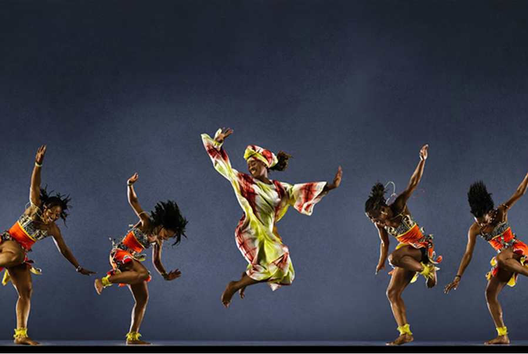

Africa
1. Danse l’Afrique danse Festival

Image Source
Description of Danse l’Afrique danse! Festival:
The Danse l’Afrique danse! festival represents a significant platform showcasing African contemporary dance within the global dance arena. Initiated in the 1990s, the festival gained momentum and expanded, drawing increasing interest from African dancers and French institutions. Its growth was propelled by strategies aiming to strengthen artistic legitimacy and internationalization.
Initially, the festival garnered attention from journalists but later extended its appeal to African dancers, who sought to participate in rising numbers, and various French institutions. With time, it evolved into a renowned biennale, strategizing its direction to reflect a more substantial connection with the international dance community.
The festival appointed influential African personalities as artistic directors, such as Germaine Acogny and Salia Sanou, to bolster its authenticity within the global dance sphere. Efforts were made to increase international partnerships and audiences, leading to a pivotal moment when the sixth edition took place in Paris, augmenting the event's size and professional attendance significantly.
Financially backed by the French Cooperation and the European Union, the festival expanded its organizational collaborations with local operators, predominantly dance companies hosting their own festivals. Although African governments maintained some distance from the festival, French institutions continued to actively support and promote it.
The festival's evolution was steered by a strategy emphasizing internationalization, marked by increased participation from global partners. This progression involved standardized application processes, requiring documented biographies, letters of intent, and recorded videos, reflecting a formalization of dance careers and choreographic work.
Throughout the festival editions, African dancers were compelled to navigate between compliance with Western-centric artistic standards and the presentation of their distinct cultural heritage. The contest's rules demanded a certain level of formal literacy and an ability to articulate their choreographic work orally, creating uneven competencies among participants.
Performers were required to showcase an urban-centric African identity, distancing themselves from traditional or rural narratives. Themes shifted from rural or traditional life to issues centered on contemporary urban experiences, political situations, and societal challenges in Africa.
Analysis on Cosmopolitanism Issues Revealed by the Festival:
The Danse l’Afrique danse! festival serves as a compelling lens through which the complexities of cosmopolitanism within the contemporary dance sphere can be observed.
Cultural Globalization and Imposed Norms: The festival's evolution reflects the imposition of Western artistic norms on African contemporary dance. African dancers faced pressure to align their expressions with urban-centric narratives, conforming to established Western ideals while grappling with their unique cultural identities.
Negotiating Identity and Compliance: The festival exemplifies the struggle for African dancers to strike a delicate balance between complying with international standards and preserving their distinct cultural heritage. Their success in the global dance arena necessitates navigating between adherence to formalized norms and the portrayal of a recognizable African identity.
Representation of 'Africanness': The festival highlights the challenge of representing 'Africanness' in a manner that meets Western expectations, focusing more on urban post-colonial African symbols rather than traditional or rural elements. This emphasis on an urban African identity is indicative of the nuanced complexities African dancers face in the globalized dance scene.
Selective Inclusion and Cultural Distinction: The festival's inclusion of African dancers is a product of a selective negotiation between dominant aesthetic norms and cultural identities. The dance field's paradoxical demand for compliance and distinction reveals how cosmopolitanism operates within the context of cultural globalization.
In essence, the Danse l’Afrique danse! festival epitomizes the multifaceted challenges encountered by African dancers within the cosmopolitan realm of contemporary dance, reflecting the intricate negotiation between conforming to global norms and asserting their distinct cultural identity.
More